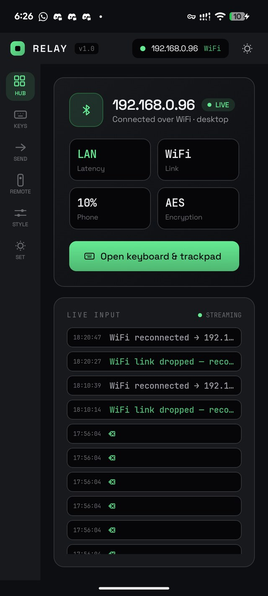
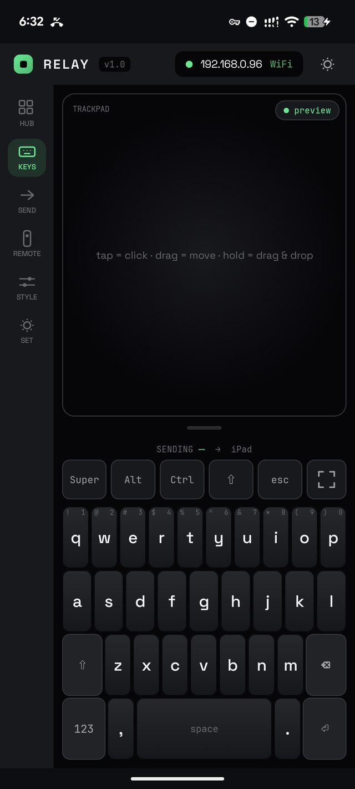
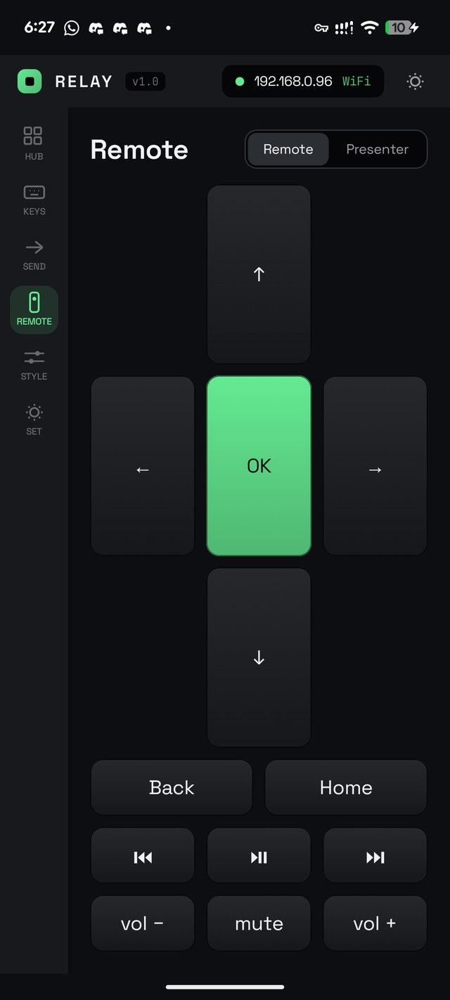

Relay turns your phone into a keyboard, mouse, and control surface for any computer. It works where remote desktop cannot: the login screen, the BIOS, a smart TV, a server with a dead OS.
End the thumb-twister remote. Phone keyboard into any TV's search box.
Drive the BIOS from your phone, out-of-band, with nothing running on the target.
Trackpad and full keyboard, from across the room.
Slides and speaker notes on your phone, tap to advance.
Let computer-use agents see and act on any machine via MCP. Even ones they can't be installed in.
Many machines, one device directory.



Relay is honest about the trade. Pick the mode that fits the target.
The phone app, the desktop receiver, the wire protocol, and the bridge firmware are all open source under GPLv3. The hosted relay, the fleet console, and the agent cloud are the paid services that keep the lights on.
Relay is a tool, not a product to upsell. The app and the receiver are open source under GPLv3. Run it on your own network, read the wire protocol, build your own bridge. Nothing is held back.
Free on your own network, forever. Set up in a few minutes.